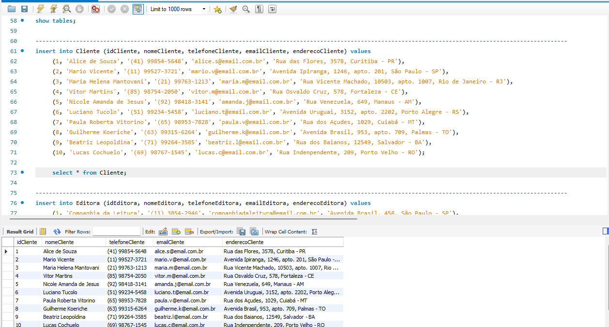
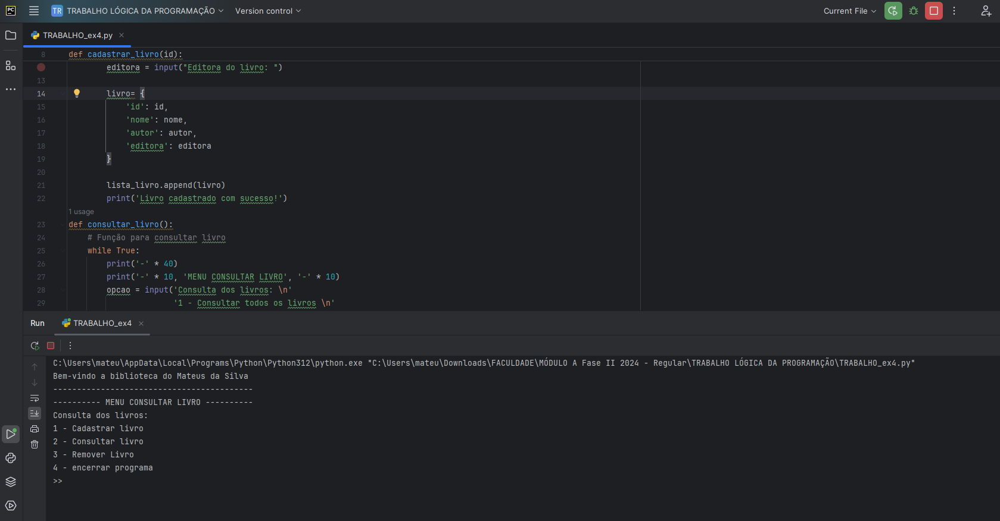

SOBRE MIM
Olá! Sou o Mateus
Tenho 19 anos e vivo em Araucária, Paraná. Sou uma pessoa extrovertida e carismática, com uma paixão por aprender e me desenvolver continuamente. Acredito que ser focado e dedicado é essencial para alcançar meus objetivos e enfrentar novos desafios.
Nos meus momentos livres, adoro passar tempo com minha namorada e me envolver em atividades esportivas, especialmente futebol e basquete. Também sou fã de videogames e recentemente tenho explorado o mundo da programação, o que tem sido uma experiência extremamente gratificante.
Estou sempre em busca de novas oportunidades para crescer, tanto pessoal quanto profissionalmente, e acredito que minha dedicação e entusiasmo me ajudam a alcançar meus objetivos e superar desafios.
FORMAÇÃO
Concluí o ensino médio com um curso técnico em Administração, o que me proporcionou uma sólida base nas áreas de gestão e negócios.
Em 2024, decidi expandir meus horizontes e iniciei minha jornada no mundo da programação. Atualmente, estou cursando Análise e Desenvolvimento de Sistemas na Universidade Uninter, na modalidade EAD, onde estou aprofundando meus conhecimentos e habilidades em tecnologia e desenvolvimento de software.
PORTIFÓLIO
Ao longo da faculdade, tenho realizado diversos projetos acadêmicos que têm sido fundamentais para a aplicação prática dos conhecimentos adquiridos. Esses projetos não apenas consolidam o que foi aprendido em sala de aula, mas também proporcionam uma experiência prática que enriquece meu desenvolvimento profissional. Através desses trabalhos, posso explorar soluções para problemas reais, aprimorar minhas habilidades técnicas e ganhar confiança para enfrentar desafios no ambiente de trabalho.

Desenvolvi um projeto para criar um banco de dados relacional, definindo entidades, atributos e relacionamentos entre tabelas. Utilize comandos SQL para criar tabelas, definir chaves primárias e estrangeiras, e inserir dados, garantindo a integridade e acessibilidade das informações.

Desenvolvi um projeto em Python para armazenamento de dados, utilizando ferramentas e bibliotecas para gerenciar e persistir informações de forma eficiente, desde a configuração do ambiente até a implementação de funcionalidades para manipulação e recuperação de dados.
CONTATOS
Tem uma pergunta ou proposta, ou apenas quer dizer olá? Vá em frente.